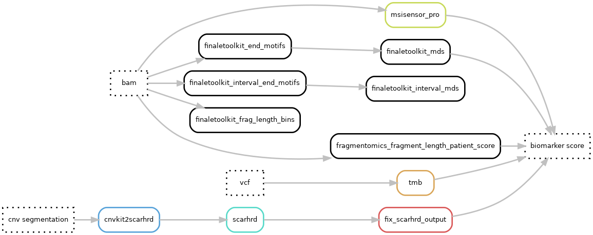

Hydra-genetics biomarker module
The biomarker module consists of programs used for producing biomarker values. The biomarkers currently implemented are:
- TMB: tumor mutational burden
- MSI: micro satellite instability score
- Under development: homologous recombination deficiency score
- Fragmentomics:
- End-motifs
- Interval-end-motifs
- mds (motif diversity score)
- interval mds
- fragment length bins
- fragment length patient score
Dag graph

Module input files
Depending on the biomarker the input files are either bam-files, vcf-files, or cnv segmentation files.
annotation/background_annotation/{sample}_{type}.background_annotation.vcf.gzalignment/samtools_merge_bam/{sample}_{type}.bamcnv_sv/cnvkit_call/{sample}_{type}.{tc_method}.loh.cns
Module output files
The biomarker scores are reported in simple text format files.
biomarker/tmb/{sample}_{type}.TMB.txtbiomarker/msisensor_pro/{sample}_{type}biomarker/scarhrd/{sample}_{type}.{tc_method}.scarhrd_cnvkit_score.txtbiomarker/finaletoolkit_end_motifs/{sample}_{type}.end-motifs.tsvbiomarker/finaletoolkit_interval_end_motifs/{sample}_{type}.interval-end-motifs.tsvbiomarker/finaletoolkit_mds/{sample}_{type}.mds.txtbiomarker/finaletoolkit_interval_mds/{sample}_{type}.interval-mds.txtbiomarker/finaletoolkit_frag_length_bins/{sample}_{type}.frag-length-bins.tsvbiomarker/fragmentomics_fragment_length_patient_score/{sample}_{type}.fragment_length_patient_score.txt